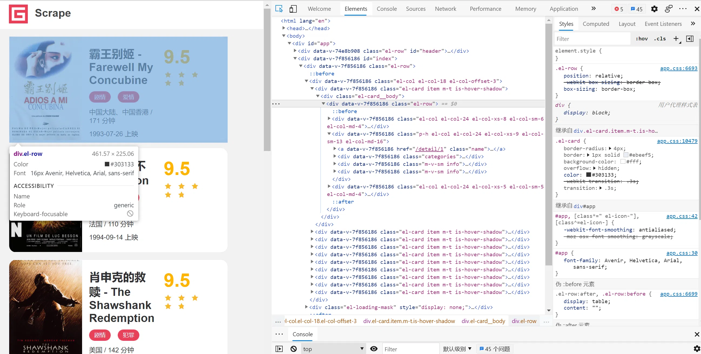
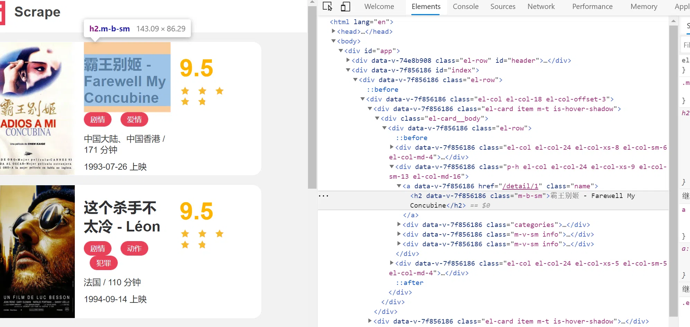
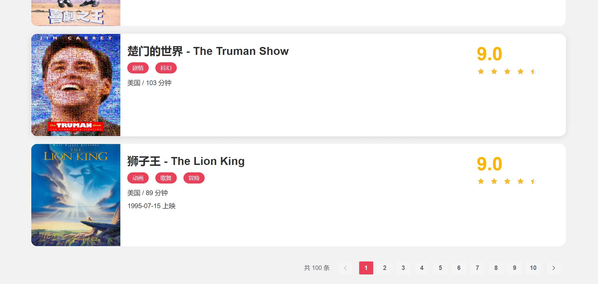
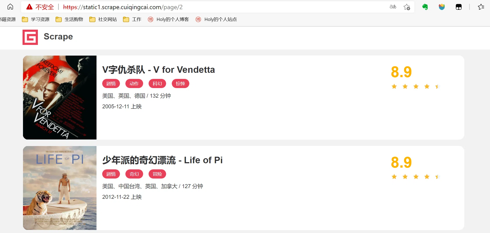
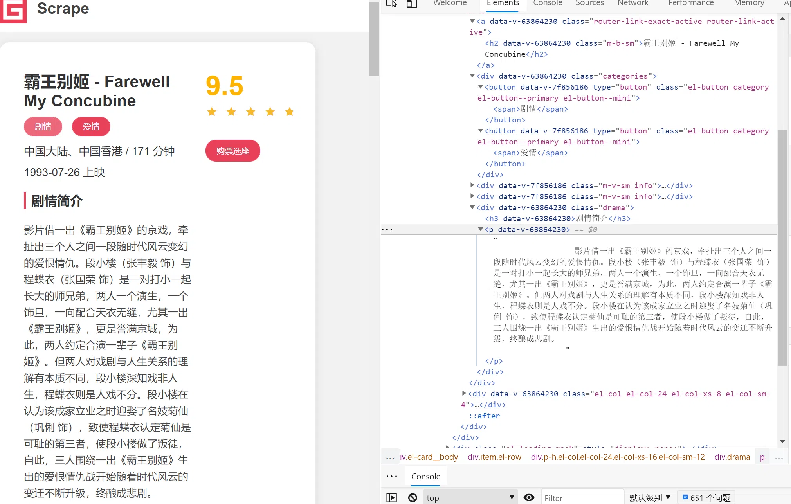
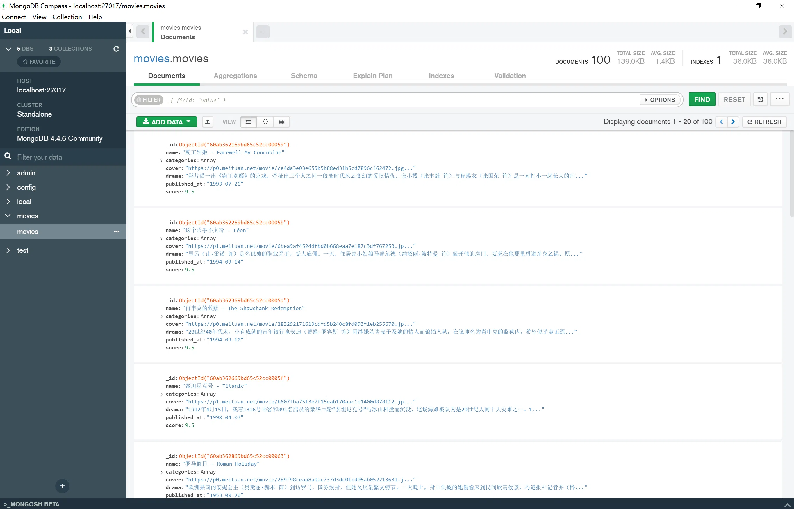

request、pyquest和pymongodb案例实战
准备工作
在本节课开始之前，我们需要做好如下的准备工作：
- 安装好
Python3（最低为 3.6 版本），并能成功运行Python3程序。 - 了解
Python多进程的基本原理。 - 了解
PythonHTTP请求库requests的基本用法。 - 了解正则表达式的用法和
Python中正则表达式库re的基本用法。 - 了解
PythonHTML解析库pyquery的基本用法。 - 了解
MongoDB并安装和启动MongoDB服务。 - 了解
Python的MongoDB操作库PyMongo的基本用法。
爬虫目标
一个基本的静态网站作为案例进行爬取，需要爬取的链接为：https://static1.scrape.cuiqingcai.com/，这个网站里面包含了一些电影信息。
要完成的目标是：
- 用
requests爬取这个站点每一页的电影列表，顺着列表再爬取每个电影的详情页。 - 用
pyquery和正则表达式提取每部电影的名称、封面、类别、上映时间、评分、剧情简介等内容。 - 把以上爬取的内容存入
MongoDB数据库。 - 使用多进程实现爬取的加速。
爬取列表页
爬取的第一步肯定要从列表页入手，首先观察一下列表页的结构和翻页规则。在浏览器中访问，然后打开浏览器开发者工具，观察每一个电影信息区块对应的HTML，以及进入到详情页的URL是怎样的，如图所示：

每部电影对应的区块都是一个div节点，它的class属性都有el-card这个值。每个列表页有10个这样的div节点，也就对应着10部电影的信息。
再分析下从列表页是怎么进入到详情页的，选中电影的名称，看下结果：

这个名称实际上是一个h2节点，其内部的文字就是电影的标题。h2节点的外面包含了一个a节点，这个a节点带有href属性，这就是一个超链接，其中href的值为/detail/1，这是一个相对网站的根URLhttps://static1.scrape.cuiqingcai.com/路径，加上网站的根URL就构成了https://static1.scrape.cuiqingcai.com/detail/1，也就是这部电影详情页的URL。这样只需要提取这个href属性就能构造出详情页的URL并接着爬取了。
接下来分析下翻页的逻辑，拉到页面的最下方，可以看到分页页码，如图所示：

页面显示一共有100条数据，10页的内容，因此页码最多是10。接着我们点击第2页，如图所示：

可以看到网页的URL变成了https://static1.scrape.cuiqingcai.com/page/2，相比根URL多了/page/2这部分内容。网页的结构还是和原来一模一样，所以我们可以和第1页一样处理。
接着查看第3页、第4页等内容，可以发现有这么一个规律，每一页的URL最后分别变成了/page/3、/page/4。所以，/page后面跟的就是列表页的页码，当然第1页也是一样，在根URL后面加上/page/1也是能访问的，只不过网站做了一下处理，默认的页码是1，所以显示第1页的内容。
分析到这里，逻辑基本就清晰了。
如果要完成列表页的爬取，可以这么实现：
- 遍历页码构造
10页的索引页URL。 - 从每个索引页分析提取出每个电影的详情页
URL。
先定义一些基础的变量，并引入一些必要的库，写法如下：
1 | |
引入requests用来爬取页面，logging用来输出信息，re用来实现正则表达式解析，pyquery用来直接解析网页，pymongo用来实现MongoDB存储，urljoin用来做URL的拼接。
接着定义日志输出级别和输出格式，完成之后再定义BASE_URL为当前站点的根URL，TOTAL_PAGE为需要爬取的总页码数量。
定义好了之后，来实现一个页面爬取的方法，实现如下：
1 | |
考虑到不仅要爬取列表页，还要爬取详情页，在这里定义一个较通用的爬取页面的方法，叫作scrape_page，它接收一个url参数，返回页面的html代码。
首先判断状态码是不是200，如果是，则直接返回页面的HTML代码，如果不是，则会输出错误日志信息。另外，这里实现了requests的异常处理，如果出现了爬取异常，则会输出对应的错误日志信息。这时将logging的error方法的exc_info参数设置为True则可以打印出Traceback错误堆栈信息。
有了scrape_page方法之后，给这个方法传入一个url，正常情况下它就可以返回页面的HTML代码。
在这个基础上，来定义列表页的爬取方法吧，实现如下：
1 | |
方法名称叫作scrape_index，这个方法会接收一个page参数，即列表页的页码，在方法里面实现列表页的URL拼接，然后调用scrape_page方法爬取即可得到列表页的HTML代码了。
获取了HTML代码后，下一步就是解析列表页，并得到每部电影的详情页的URL了，实现如下：
1 | |
这里我们定义了parse_index方法，它接收一个html参数，即列表页的HTML代码。接着用pyquery新建一个PyQuery对象，完成之后再用.el-card .name选择器选出来每个电影名称对应的超链接节点。遍历这些节点，通过调用attr方法并传入href获得详情页的URL路径，得到的href就是上文所说的类似/detail/1这样的结果。这并不是一个完整的URL，所以需要借助urljoin方法把BASE_URL和href拼接起来，获得详情页的完整URL，得到的结果就是类似https://static1.scrape.cuiqingcai.com/detail/1这样完整的URL了，最后yield返回即可。
通过调用parse_index方法传入列表页的HTML代码就可以获得该列表页所有电影的详情页URL了，接下来把上面的方法串联调用一下，实现如下：
1 | |
定义了main方法来完成上面所有方法的调用，首先使用range方法遍历一下页码，得到的page是1~10，接着把page变量传给scrape_index方法，得到列表页的HTML，赋值为index_html变量。接下来再将index_html变量传给parse_index方法，得到列表页所有电影的详情页URL，赋值为detail_urls，结果是一个生成器，调用list方法就可以将其输出出来。
1 | |
由于输出内容比较多，这里只贴了一部分。可以看到，在这个过程中程序首先爬取了第1页列表页，然后得到了对应详情页的每个URL，接着再接着爬第2页、第3页，一直到第10页，依次输出了每一页的详情页URL。这样，就成功获取到所有电影详情页URL。
爬取详情页
首先观察一下详情页的HTML代码，如图所示：

经过分析，要提取的内容和对应的节点信息如下：
- 封面：是一个
img节点，其class属性为cover。 - 名称：是一个
h2节点，其内容便是名称。 - 类别：是
span节点，其内容便是类别 - 内容，其外侧是
button节点，再外侧则是class为categories的div节点。 - 上映时间：是
span节点，其内容包含了上映时间，其外侧是包含了class为info的div节点。但注意这个div前面还有一个class为info的div节点，可以使用其内容来区分，也可以使用nth-child或nth- of-type这样的选择器来区分。另外提取结果中还多了「上映」二字，可以用正则表达式把日期提取出来。 - 评分：是一个
p节点，其内容便是评分，p节点的class属性为score。 - 剧情简介：是一个
p节点，其内容便是 - 剧情简介，其外侧是
class为drama的div节点。
刚才已经成功获取了详情页的URL，接下来要定义一个详情页的爬取方法，实现如下：
1 | |
定义了一个scrape_detail方法，它接收一个url参数，并通过调用scrape_page方法获得网页源代码。由于刚才已经实现了scrape_page方法，所以在这里不用再写一遍页面爬取的逻辑，直接调用即可，这就做到了代码复用。
单独定义一个scrape_detail方法在逻辑上会显得更清晰，而且以后如果想要对scrape_detail方法进行改动，比如添加日志输出或是增加预处理，都可以在 scrape_detail里面实现，而不用改动scrape_page方法，灵活性会更好。
详情页的爬取方法已经实现了，接着就是详情页的解析了，实现如下：
1 | |
定义了parse_detail方法用于解析详情页，它接收一个html参数，解析其中的内容，并以字典的形式返回结果。每个字段的解析情况如下所述：
cover：封面，直接选取class为cover的img节点，并调用attr方法获取src属性的内容即可。name：名称，直接选取a节点的直接子节点h2节点，并调用text方法提取其文本内容即可得到名称。categories：类别，由于类别是多个，所以这里首先用.categories button span选取了class为categories的节点内部的span节点，其结果是多个，所以这里进行了遍历，取出了每个span节点的文本内容，得到的便是列表形式的类别。published_at：上映时间，由于pyquery支持使用:contains直接指定包含的文本内容并进行提取，且每个上映时间信息都包含了「上映」二字，所以这里就直接使用:contains(上映)提取了class为info的div节点。提取之后，得到的结果类似「1993-07-26 上映」这样，并不想要「上映」这两个字，所以又调用了正则表达式把日期单独提取出来了。当然这里也可以直接使用strip或replace方法把多余的文字去掉。drama：直接提取class为drama的节点内部的p节点的文本即可。score：直接提取class为score的p节点的文本即可，由于提取结果是字符串，所以我们需要把它转成浮点数，即``float`类型。
上述字段提取完毕之后，构造一个字典返回。这样，成功完成了详情页的提取和分析了。
将main方法稍微改写一下，增加这两个方法的调用，改写如下：
1 | |
首先遍历了detail_urls，获取了每个详情页的URL，然后依次调用了scrape_detail和parse_detail方法，最后得到了每个详情页的提取结果，赋值为data并输出。
运行结果如下：
1 | |
可以看到，已经成功提取出每部电影的基本信息，包括封面、名称、类别，等等。
保存到MongoDB
请确保现在有一个可以正常连接和使用的MongoDB数据库。 将数据导入MongoDB需要用到PyMongo这个库，这个在最开始已经引入过了。那么接下来我们定义一下 MongoDB的连接配置，实现如下：
1 | |
在这里声明了几个变量，介绍如下：
MONGO_CONNECTION_STRING：MongoDB的连接字符串，里面定义了MongoDB的基本连接信息，如host、port，还可以定义用户名密码等内容。MONGO_DB_NAME：MongoDB数据库的名称。MONGO_COLLECTION_NAME：MongoDB的集合名称。
这里用MongoClient声明了一个连接对象，然后依次声明了存储的数据库和集合。接下来，再实现一个将数据保存到MongoDB的方法，实现如下：
1 | |
声明了一个save_data方法，它接收一个data参数，也就是我们刚才提取的电影详情信息。在方法里面，调用了update_one方法，第1个参数是查询条件，即根据name进行查询；第2个参数是data对象本身，也就是所有的数据，这里用$set操作符表示更新操作；第3个参数很关键，这里实际上是upsert参数，如果把这个设置为 True，则可以做到存在即更新，不存在即插入的功能，更新会根据第一个参数设置的name字段，所以这样可以防止数据库中出现同名的电影数据。
注：实际上电影可能有同名，但该场景下的爬取数据没有同名情况，当然这里更重要的是实现
MongoDB的去重操作。
接下来将main方法稍微改写一下就好了，改写如下：
1 | |
重新运行，输出结果：
1 | |
运行完毕之后我们可以使用MongoDB客户端工具可视化查看已经爬取到的数据，结果如下：

多进程加速
由于整个的爬取是单进程的，而且只能逐条爬取，速度稍微有点慢，有没有方法来对整个爬取过程进行加速呢？
在前面学习了多进程的基本原理和使用方法，下面就来实践一下多进程的爬取。
由于一共有10页详情页，并且这10页内容是互不干扰的，所以可以一页开一个进程来爬取。由于这10个列表页页码正好可以提前构造成一个列表，所以可以选用多进程里面的进程池Pool来实现这个过程。
这里需要改写下main方法的调用，实现如下：
1 | |
这里首先给main方法添加一个参数page，用以表示列表页的页码。接着声明了一个进程池，并声明pages为所有需要遍历的页码，即1~10。最后调用map方法，第1个参数就是需要被调用的方法，第2个参数就是pages，即需要遍历的页码。
这样pages就会被依次遍历。把1~10这10个页码分别传递给main方法，并把每次的调用变成一个进程，加入到进程池中执行，进程池会根据当前运行环境来决定运行多少进程。
运行输出结果和之前类似，但是可以明显看到加了多进程执行之后，爬取速度快了非常多。可以清空一下之前的MongoDB数据，可以发现数据依然可以被正常保存到MongoDB数据库中。
本博客所有文章除特别声明外，均采用 CC BY-SA 4.0 协议 ，转载请注明出处！